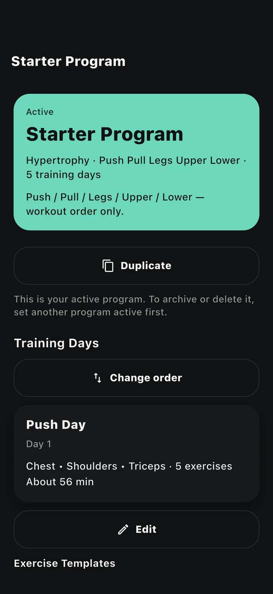
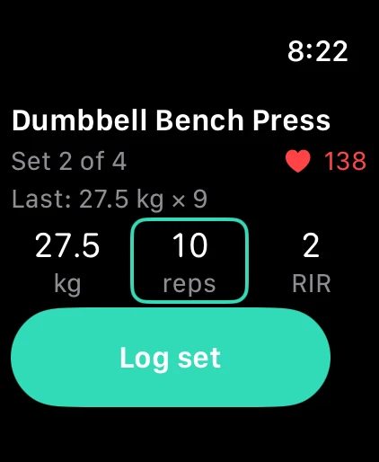
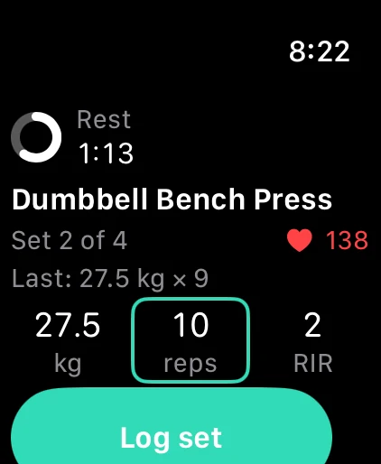
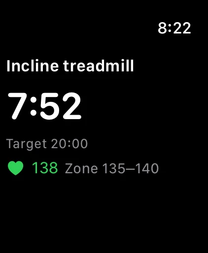
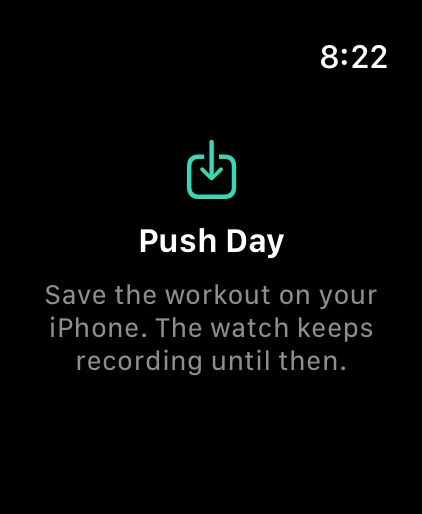

Train by the evidence.
A training app designed by a physiotherapist who lifts. Every rule inside comes with its source.
Free, no ads. iPhone through Apple's TestFlight, Android through Google Play.
A set, the rest, the next set. Tap Save set to try it.
Free, no ads. iPhone through Apple's TestFlight, Android through Google Play.
- Designed by a physiotherapist
- Every rule has its source
- Free. No ads, no tracking
Training is a long journey. It takes organisation, dedication and persistence: in your plan, your food and your sleep. You don't compare yourself with anyone. Only with who you were yesterday.
A coach that reads your training, not your mood.

A plan built from the research
- For each muscle, the plan sets how many sets you do in a week, within the ranges the research supports. If you are new, you start with fewer.
- Heavy lifts come first. When you train four or more days a week, a session stays at 24 sets or fewer, warm-up sets not counted.
- Each day shows how long the workout will take, with rests and warm-up included.




Leave the phone in your bag.
Log the set from your wrist. The watch taps you when the rest is over.
- Sets. Weight and reps come filled in from last time. Turn the Crown, tap Log set.
- Rest. The ring counts down and your wrist buzzes at zero.
- Cardio. Time against your target, and your heart rate against its zone.
- Finish. The watch keeps recording until you save the workout on your iPhone.
Phone out of reach? Sets are kept on the watch and delivered when it is back. Apple Watch is free until Pro launches.
How many sets a week?
More weekly sets build more muscle, but each step costs more than the last. Drag to see what 67 studies found.
Kompsatos sets how many sets each muscle gets a week from these findings, and fewer when you are new.
How to read these numbers
Averages across studies; people differ. A set that trains a muscle indirectly counts as half. One detectable step is a 2.05% gain in muscle size, the smallest effect the analysis could tell apart. The curve joins the tier limits of Table 3. Few studies go above about 25 sets, so estimates there are less certain.
Pelland JC et al. Sports Med 2026;56(2):481–505. Meta-regression, 67 studies, 2,058 participants. doi:10.1007/s40279-025-02344-w
One plate at a time.
What the app does for you along the way.
- Day 1Your first log is your starting point, not a record.
- Every sessionYour next weights come from what you did, not from a template.
- Every weekA weekly review sums up what you did against your plan.
- Month after monthLevels and titles come from keeping your plan, never from doing more than it asks.
- A year inCharts of your lifts and a body outline drawn from your own measurements. The only comparison is with you.
Hi, I'm Dimitris.
I'm a physiotherapist and I train. I built Kompsatos to fix the mistakes I and the athletes around me made for years. I share every step of the build, the research behind each decision, and my own training with the app. The name comes from the Kompsatos, a river in Thrace, northern Greece.
The coach is free. Always.
Training guidance should never sit behind a paywall. No ads, ever, and your data is never sold.
Founding Athletes. Beta testers who stay active for 4 weeks or more get 12 months of Pro free when it launches, and a title that can never be bought.
Questions people ask.
Is Kompsatos free?
Yes. The coach is free, always: logging, plans, load suggestions, records, guidance, export of your data and the rest timer on your Lock Screen. A paid Pro tier is planned for extras such as full chart history (Free shows 3 months), Apple Watch, widgets and themes, at a planned €3.99 a month or €29.99 a year. Prices may change before launch.
When do I get access to the beta?
Right away. On iPhone, open the beta link, install Apple's TestFlight app if it asks, then tap Install. On Android it takes two steps, on the Android page. Places on iPhone are limited; if the beta is full, join the waitlist and you will hear from us when places open.
Do I need an account, and where does my data go?
No account is needed. As a guest everything stays on your phone. With an account, and only with your explicit consent, your training and your settings are backed up to a database in Frankfurt, Germany, so you can restore them on another phone. No ads, no analytics, and your data is never sold. Details in the privacy policy.
Does it work without an Apple Watch?
Yes. Everything works on the phone alone, on iPhone and on Android. The watch is an extra for logging from your wrist.
How does a physiotherapist help?
As a physiotherapist, I read the training research and turn it into the app: how many sets, how much weight, how much rest, which mistakes to avoid. If you have a question about the theory behind a rule, write to me. Pain or an injury needs an in-person assessment by a doctor or a physiotherapist.
Start with today's workout.
Free, on iPhone and Android.